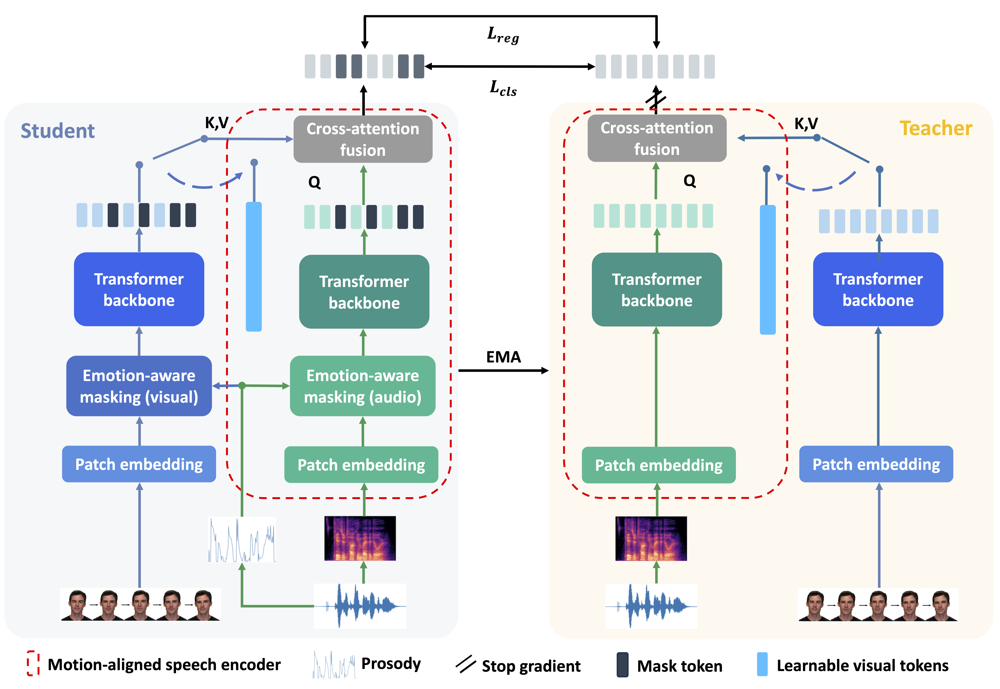
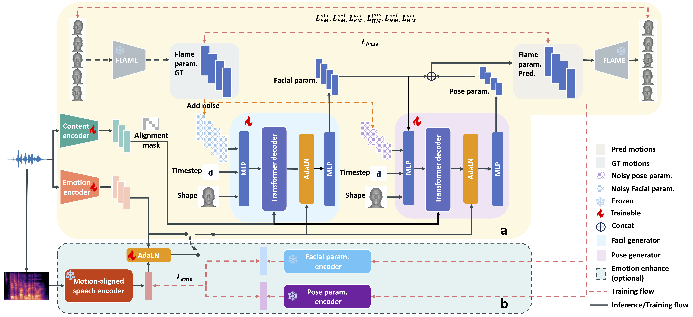

Generating expressive 3D talking heads solely from speech remains a significant challenge due to the scarcity of high-fidelity 3D data, which limits the modeling of complex emotional motion patterns. In this paper, we introduce Expressive Talking Head (ETHead), a method for generating 3D facial and head motions that vividly align with the emotional content of input speech. To overcome the data limitations, we design a self-distillation framework that leverages large-scale 2D talking videos to pre-train a specialized speech encoder. By incorporating a novel emotion-modulated probabilistic masking mechanism, this framework aligns speech representations with expressive visual dynamics, allowing the encoder to extract features highly correlated with facial and head motions directly from audio. These features are then leveraged to guide 3D generation, enriching input cues and providing explicit supervision through a joint speech-motion latent space. Extensive experiments demonstrate that ETHead substantially outperforms state-of-the-art methods. Furthermore, our motion-aligned speech encoder can serve as a transferable module, offering a general solution for enhancing expressiveness in other 3D talking head animation frameworks. The source code will be publicly released.

Motion-Aligned Speech Encoder

(a) Generation Pipeline (b) Auxiliary Module
@article{ethead2026,
title={ETHead: Generating Expressive 3D Facial Animation and Head Movement from Speech},
author={Xie, Jiu-Cheng and Zheng, Jiwang and Xia, Yongkang and Xiong, Jian and Pun, Chi-Man and Gao, Hao and Xu, Feng},
year={2026}
}